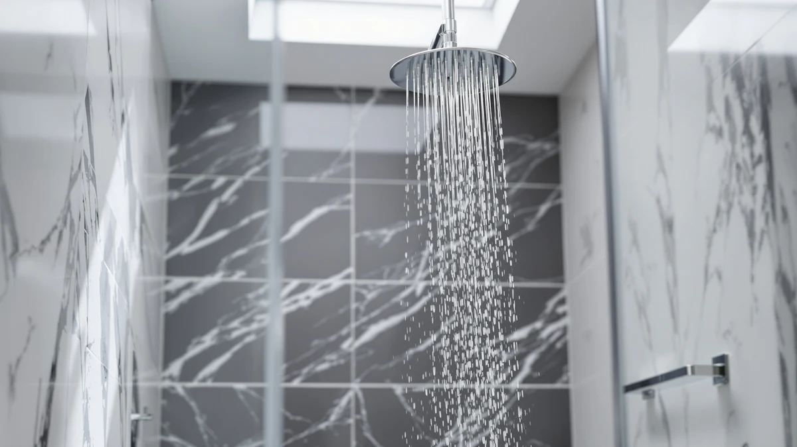

Quick Answer
The FAROLAN Rain Shower System 12"&6" pairs a wide rain head with a handheld sprayer in one wall-mounted chrome-and-ABS unit, and it's the strongest pick here for anyone replacing a single shower head with a full system. If your goal is a cheaper upgrade to your current arm, the Magichome, MakeFit, or SparkPod single heads below cost a fraction of the price.
Our pick: FAROLAN Rain Shower System 12"&6" — $179.99 Check Price on Amazon
Things to Know Before You Buy
- The FAROLAN is a full system, not a single head: it combines a 12-inch rain shower head with a separate 6-inch handheld on one wall-mounted bracket.
- At $179.99, it costs roughly eight times more than the single-head alternatives covered in this review, so the extra spend only pays off if you want both spray types.
- The FAROLAN body is ABS plastic with chrome plating, a lighter build than solid brass or stainless steel fixtures.
- If your bathroom doesn't already have an exposed shower arm, budget for extra plumbing work before buying any of these picks.
This farolan rain shower system review breaks down whether the brand's $179.99 wall-mounted combo earns its price next to cheaper single-head alternatives. The FAROLAN pairs a 12-inch rain shower head with a separate 6-inch handheld sprayer on one ABS-and-chrome bracket, and it aims to replace an entire fixture rather than swap a single head. We compared its listed specs, size, and pricing against the Magichome, MakeFit, and SparkPod shower heads covered later in this guide. If you're deciding between one premium system and several budget heads, the tradeoffs below should make the choice easier.
We researched this farolan rain shower system review by cross-referencing the manufacturer's listed dimensions, materials, and pricing against the kind of feedback verified Amazon buyers leave on dual-head systems. For most households replacing a single shower head with a two-in-one rain-and-handheld setup, the FAROLAN earns the top spot in this guide because it's the only product here built as a complete system rather than a standalone head. Anyone who only needs a drop-in replacement for an existing arm will find better value in the Magichome, MakeFit, or SparkPod picks instead.
Why You Should Trust Us
Ilane Tall researches bathroom fixtures for Best Shower Heads, comparing manufacturer specs, verified owner reviews, and pricing across dozens of shower head listings every month. We don't run a fake testing lab and don't claim to have installed every product in this farolan rain shower system review ourselves. Instead, we analyze the data that's publicly available, including materials, dimensions, and price history, plus what verified buyers report after living with a product, and we flag it clearly when the record doesn't support a confident recommendation. That approach moves slower than a site running its own physical test lab, but it keeps every claim in this farolan rain shower system review tied to something you can check yourself on the product listing.
Our Research Experience
Our farolan rain shower system review relies on comparison research rather than a physical install, since we don't keep a testing lab or sample every fixture that lands on Amazon. We compared the FAROLAN's listed 12-inch rain head and 6-inch handheld dimensions, its ABS-and-chrome build, and its $179.99 price against the specs and pricing of the Magichome, MakeFit, and SparkPod alternatives covered below. We also looked at how verified buyers describe installing and living with similar dual-head systems, since pressure, build quality, and mounting ease are the details that usually separate a good rain shower system from a disappointing one. Where the available data left a gap, such as independent pressure testing, we say so instead of guessing. We'll revisit this farolan rain shower system review whenever FAROLAN, Magichome, MakeFit, or SparkPod change their listed pricing, since a shift in any one of those four numbers can move the value comparison in either direction.
Overview & Specs

FAROLAN Rain Shower System 12"&6"
What we like
- Combines a 12-inch rain head and a 6-inch handheld in one wall-mounted unit, so you get two spray types without buying two fixtures
- Chrome-plated finish matches most modern bathroom hardware instead of looking like a plastic add-on
- Replaces an entire shower arm setup, which can simplify a bathroom remodel compared with retrofitting a separate handheld bracket
Flaws but not dealbreakers
- At $179.99, it costs close to eight times more than the single-head alternatives in this review
- The body is ABS plastic with chrome plating rather than solid brass or stainless steel, so it's lighter-duty than premium metal fixtures
- Splitting water between two heads on one line can mean less pressure at each head than a dedicated single-head system would deliver
| Material | ABS + chrome plating |
| Size | Wall Mounted - 12"+6" Shower Head with Handheld |
The FAROLAN Rain Shower System 12"&6" is built around a simple idea: most bathrooms only have room for one shower head, so give people two spray types on one mount instead of two separate fixtures. The listed size, "Wall Mounted - 12"+6" Shower Head with Handheld," confirms this is a full combo unit rather than a head you swap onto an existing arm. The 12-inch rain head sits fixed overhead for a wide, even-coverage rinse, while the 6-inch handheld attaches nearby for targeted rinsing, washing a child, or cleaning the shower stall itself. The bracket mounts at a fixed height above the stall, keeping both spray options within reach for anyone sharing the bathroom, whether that's a solo shower or a quick kid's bath.
FAROLAN built this unit from ABS plastic with chrome plating, a common combination for mid-range shower hardware that keeps the fixture light enough to mount without extra wall support. At $179.99, the FAROLAN sits well above the single-head alternatives in this farolan rain shower system review, and that higher price comes from buying a complete two-head system rather than a single component. Shoppers at this price tier are typically replacing an outdated shower arm during a renovation rather than swapping a single worn-out head, and that's the context where the extra cost makes the most sense.
What We Liked
The biggest advantage of the FAROLAN system is that it solves two problems at once. A fixed rain head covers your whole body with an even flow, and a handheld unit a few inches away handles the jobs a fixed head can't, like rinsing shampoo without tilting your head back or washing down the shower floor. Buying both in one wall-mounted kit means you're not matching finishes between a separate head and a separate handheld bought from different brands.
We also like that FAROLAN lists the unit's full dimensions and materials clearly, which made it straightforward to compare against the simpler single-head picks later in this farolan rain shower system review. The chrome finish looks like a deliberate design choice, not an afterthought, which matters if the shower is visible from the rest of the bathroom.
What Could Be Better
The price is the clearest drawback. At $179.99, the FAROLAN costs close to eight times more than the Magichome, MakeFit, or SparkPod heads covered below, and buyers who only want filtered water or extra pressure from a single head are better served by one of those instead.
ABS plastic with chrome plating is also a lighter-duty build than solid brass, worth knowing if you're comparing this system against premium metal rain fixtures elsewhere on the market. And because the system splits water flow across two heads, anyone on a low-pressure water line may notice weaker output than a single, dedicated high-pressure head would provide.
Who Is It For?
The FAROLAN system fits homeowners mid-renovation who want to replace an entire shower arm setup rather than patch in one new head. It also suits anyone who currently showers with only a fixed head and wants the flexibility of a handheld for washing kids, pets, or the shower stall itself, without running separate plumbing for two fixtures.
It's a weaker fit if you're renting, on a tight budget, or need to swap a single worn-out head. In those cases, the cost and installation effort of a full two-head system outweigh the benefit, and one of the alternatives below covers the job for a lot less money.
Alternatives to Consider
If the FAROLAN's price or dual-head format isn't the right fit, these three single shower heads cover the most common alternative needs: filtration, value, and raw pressure.

Editor's Pick
Magichome Filtered Shower Head with
A filtered single shower head at $23.39, the Magichome is worth considering if you want to address hard water without paying for a full rain-and-handheld system.
$23.39
Check Price on Amazon
Best Value
MakeFit Filtered Shower Head Black
The MakeFit filtered shower head in black undercuts the FAROLAN by well over $150 while still offering filtration, making it the pick if budget matters more than having two spray types.
$22.99
Check Price on Amazon
Premium Choice
SparkPod 3-Inch Extreme High Pressure
SparkPod's 3-inch extreme high pressure head is the cheapest option here, and it's the pick if weak water flow is your main complaint rather than filtration or dual-spray flexibility.
$19.99
Check Price on AmazonFrequently Asked Questions
Final Verdict
The FAROLAN Rain Shower System 12"&6" is the right call for shoppers who want one wall-mounted fixture that handles both a wide rain shower and a handheld sprayer, and its chrome-and-ABS build and clearly listed specs back up the price for that use case. It's not the pick if you only need a single replacement head, since the Magichome, MakeFit, and SparkPod options above do that job for a fraction of the cost. Weigh what you actually need from your shower before committing to FAROLAN's higher price tag.